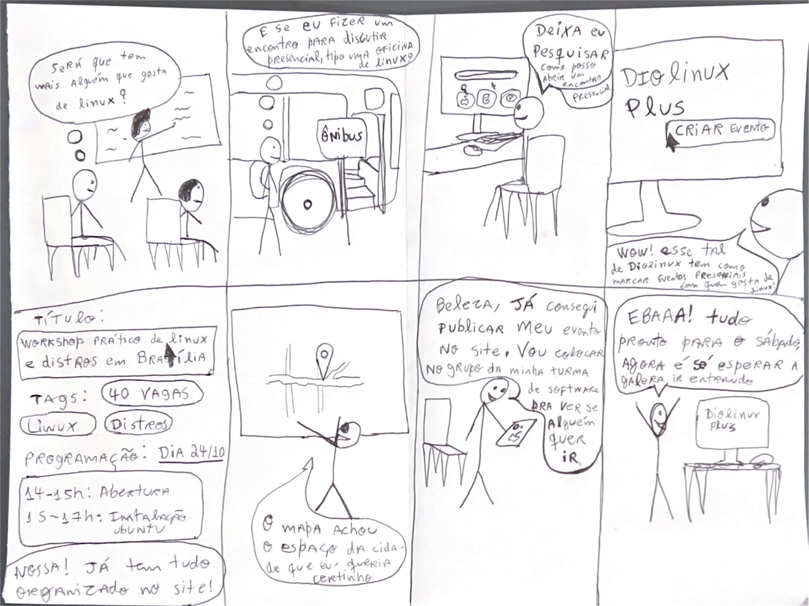
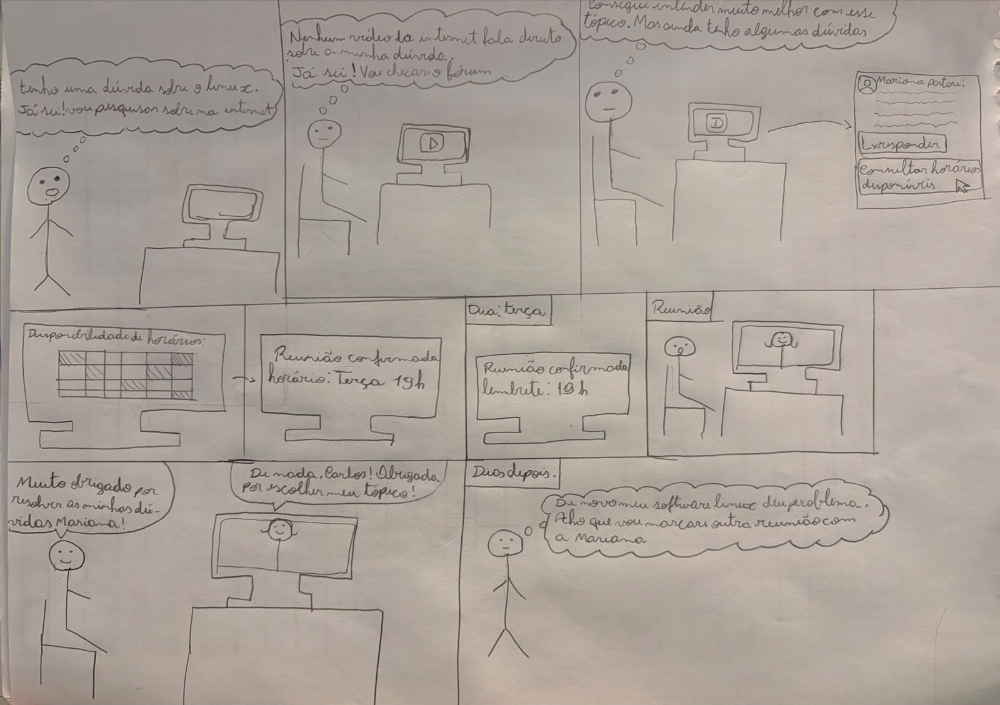

Storyboards da Equipe (Nível 1)
Tabela de Contribuição e Transparência de IA Generativa
A Tabela 1 apresenta a autoria e responsabilidade individual na elaboração dos storyboards da equipe.
Tabela 1 — Matriz de Contribuição dos Storyboards
| Integrante | Atribuição no Artefato | Data | Revisor | Ferramenta de IA Utilizada | Propósito do Uso de IA |
|---|---|---|---|---|---|
| Vinicius Silva Araruna | Autor do Storyboard 1: Concepção narrativa, elaboração da prancha física em papel (8 quadros, 300 DPI), roteiro de cenas com integração de IA semântica e documentação detalhada. | 24/10/2026 | Gustavo Antonio | Antigravity (LLM) | Apoio na estruturação sintática de tabelas e alinhamento de rastreabilidade HTA. |
| Gustavo Antonio Rodrigues e Silva | Autor do Storyboard 2: Concepção narrativa, desenho manual em prancha física (8 quadros), digitalização em 300 DPI, redação das histórias e decomposição das cenas. | 22/10/2026 | Vinicius Silva Araruna | — | Desenho manual autoral em papel e digitalização via scanner óptico. |
| Edvaldo Soares Brasileiro Filho | Autor do Storyboard 3: Concepção e estruturação da narrativa da Grade de Disponibilidade e Agendamento de Reuniões/Mentorias no fórum. | 24/10/2026 | Gustavo Antonio Rodrigues e Silva | LLM (Antigravity) | Apoio na estruturação dos cenários e tabela de quadros. |
Fonte: Elaborada pelos autores, 2026.
1. Introdução e Fundamentação Metodológica
No âmbito do Ciclo de Vida de Engenharia de Usabilidade de Mayhew (1999) adotado na disciplina de Interação Humano-Computador (FGA0173), a fase de Design, Avaliação e Desenvolvimento inicia-se no Nível 1 (Prototipação de Baixa Fidelidade e Modelagem Conceitual) (Barbosa & Silva, 2021, p. 115).
Nesta etapa, o Storyboard atua como uma técnica primordial de ideação e comunicação visual rápida. Originário da indústria cinematográfica e incorporado a IHC por pioneiros como Alan Cooper (1999) e Beyer & Holtzblatt (1997), o storyboard consiste em uma série de ilustrações dispostas em sequência temporal em formato de quadrinhos, acompanhadas de balões de fala, pensamentos e legendas contextuais (Rogers, Sharp & Preece, 2013).
Conforme documentado no Item Teórico: Storyboard em IHC (Silva, 2026), a eficácia de um storyboard não repousa em virtuosismo artístico, mas em sua capacidade de comunicar fielmente os três pilares canônicos de Scott Klemmer (2012):
- Cenário e Contexto (Setting): Quem é o usuário, onde ele está fisicamente (sala de aula, transporte público, quarto) e qual problema ou necessidade inicial dispara a interação;
- Sequência e Encadeamento (Sequence): Quais passos são executados, como a interface interage com o usuário e quais decisões práticas ocorrem em cada etapa da jornada;
- Satisfação e Desfecho (Satisfaction): O que motivou o usuário a escolher o sistema, qual necessidade prática foi atendida e qual o estado emocional positivo após atingir o objetivo pretendido.
Em estrito atendimento aos critérios de avaliação do Plano de Ensino da disciplina (Sales, 2026, pp. 12-13): - Cada storyboard ilustra a jornada de um integrante da equipe aplicada ao Fórum Diolinux Plus, garantindo a proporção de 1 storyboard por membro ativo; - Os cenários dialogam diretamente com as especificações da Análise de Tarefas (HTA e CTT) e com os perfis de discentes mapeados nas Personas.
2. Storyboard 1 – Criação e Publicação de Tópico de Dúvida com Tags e Formatação Markdown com Integração de IA Semântica (Vinicius Silva Araruna)
- Autor: Vinicius Silva Araruna
- Revisor: Gustavo Antonio Rodrigues e Silva
- Funcionalidade Mapeada:
CF01/F01— Criação e Publicação de Tópico com Tags, Markdown e Verificação Semântica por IA Pré-Envio - Persona Representada: Lucas Mendonça (Estudante de Engenharia de Software e Estagiário DevOps)
- Metodologia de Referência: Buxton (2007), Scott Klemmer (2012) e Barbosa & Silva (2021)
- Formato: Opção B (Ilustração manual em papel A4 a 300 DPI e digitalização fotográfica tratada)
- Documentação Aprofundada: Artefato Completo do Storyboard da Tarefa 1
2.1 Contexto e Motivação
Lucas Mendonça, estudante de Engenharia de Software e estagiário DevOps, depara-se tarde da noite com uma falha de permissão ao montar volumes no Podman rootless no Fedora 40. Após exaurir tentativas locais, decide recorrer à comunidade técnica do Fórum Diolinux Plus para relatar a dúvida com logs formatados em Markdown e tags precisas, beneficiando-se da verificação inteligente de tópicos similares pré-envio para não gerar duplicatas.
2.2 Por que o estudante utiliza essa funcionalidade?
- Story 1 – Resolução de Gargalos Técnicos Acadêmicos e Profissionais:
Como estudante e estagiário, preciso submeter logs de terminal e comandos de configuração sem perda de indentação ou quebra de sintaxe, para que desenvolvedores experientes consigam diagnosticar meu problema com precisão.
- Story 2 – Prevenção de Redundâncias e Desduplicação Inteligente:
Como membro consciente da comunidade, quero que a interface me alerte caso outra pessoa já tenha publicado uma dúvida idêntica com solução aceita, poupando meu tempo e evitando poluir o fórum.
- Story 3 – Retribuição Colaborativa e Registro de Solução:
Como usuário beneficiado pelo apoio comunitário, faço questão de validar a solução no terminal e marcar o selo oficial de Solução Aceita na postagem, auxiliando futuros estudantes que pesquisarem a mesma falha.
2.3 Visão Geral da Prancha Física (Opção B)
A Figura 1 apresenta a prancha desenhada à mão em folha de papel sulfite A4 por Vinicius Silva Araruna, contendo a sequência cronológica completa dos 8 quadros da Tarefa 1.

Figura 1 — Prancha original manuscrita do Storyboard 1 (Opção B, 300 DPI) com verificação semântica de IA.
Fonte: Vinicius Silva Araruna, 2026.
2.4 Roteiro Cênico Sequencial (8 Quadros)
A Tabela 2 apresenta o detalhamento de cada cena, explicitando a ação do interagente, o feedback da interface e a conformidade ergonômica.
Tabela 2 — Roteiro de Cenas do Storyboard 1 (Criação de Tópico com Tags, Markdown e IA Semântica)
| # | Cena / Ambiente (Setting) | Ação do Interagente e Comportamento do Sistema | Princípio Ergonômico e Usabilidade |
|---|---|---|---|
| 1 | Ambiente de Trabalho / Terminal: Lucas no terminal do Fedora 40 recebe erro de permissão ao subir container Podman rootless. | Lucas tenta resolver com comandos locais, mas sem sucesso. Decide pedir ajuda no fórum. | Evidencia a necessidade real (Trigger motivacional) e o contexto técnico de uso. |
| 2 | Acesso ao Fórum Diolinux: Tela inicial do fórum com foco no botão primário de nova postagem. | Lucas clica no botão "+ Novo Tópico". | Visibilidade do estado do sistema e consistência com padrões de fóruns modernos. |
| 3 | Seleção Taxonômica: Modal de criação com seleção de categoria e tags técnicas. | Lucas seleciona a categoria #suporte-tecnico e digita as tags podman, fedora e permissoes. |
Prevenção de ambiguidades e organização semântica facilitando a busca futura. |
| 4 | Composição Estruturada com Markdown: Editor de texto com visualização em duas colunas (split-view). | Lucas insere o título objetivo, redige a descrição e cola os blocos de comando formatados com crases triplas. A pré-visualização em tempo real mostra a formatação rica renderizada. | Correspondência com as expectativas do usuário e redução da carga cognitiva (WYSIWYG preview). |
| 5 | Assistente Semântico de IA Pré-Envio: Caixa flutuante inteligente exibindo tópicos correlatos antes da submissão final. | Ao terminar de digitar o título e descrição, a IA analisa semanticamente o texto e apresenta uma lista: "Identificamos 2 tópicos semelhantes com solução aceita. Deseja consultá-los antes de postar?". | Antecipação das necessidades do usuário e economia de esforço cognitivo comunitário (desduplicação). |
| 6 | Publicação Concluída: Lucas clica em "Criar Tópico" após confirmar que seu caso tem particularidades não resolvidas nos tópicos sugeridos. | O sistema publica o tópico instantaneamente, atribui as tags e exibe confirmação visual não obstrutiva. | Fechamento de ciclo de ação e sensação de controle do usuário. |
| 7 | Notificação e Colaboração: Lucas recebe notificação de resposta de um colega da comunidade com o ajuste de permissão do SELinux. | Lucas aplica a instrução no terminal e verifica que o container subiu com sucesso. | Valor prático da comunidade e satisfação imediata no uso do sistema. |
| 8 | Marcação de Solução Aceita e Desfecho Positivo: Lucas retorna ao fórum, clica no botão "Marcar como Solução" e expressa gratidão na thread. | A resposta ganha destaque visual verde de solução e o tópico é marcado como resolvido na listagem geral. | Satisfação final (Satisfaction de Scott Klemmer) e ciclo virtuoso de compartilhamento de conhecimento. |
Fonte: Elaborada por Vinicius Silva Araruna, 2026.
2.5 Alinhamento com as Dimensões de Scott Klemmer (2012)
- Cenário (Setting): O storyboard inicia no ambiente de desenvolvimento do estudante universitário (terminal de sistema operacional Linux), avança pela interface web da comunidade e encerra com o teste real executado no terminal.
- Sequência (Sequence): Ordem causal estrita em 8 passos lógicos: Erro no terminal → Decisão de recorrer à comunidade → Categorização → Composição em Markdown → Verificação de IA pré-envio → Publicação → Notificação de resposta → Validação e marcação de solução aceita.
- Satisfação (Satisfaction): O desfecho cumpre o propósito de IHC: resolver a frustração do usuário com agilidade, empoderando-o a retribuir à comunidade através da marcação oficial de solução.
2.6 Registros Audiovisuais (Teste-Piloto e Avaliação Oficial)
A Tabela 3 consolida os registros audiovisuais em vídeo das sessões práticas de validação do Storyboard 1 conduzidas por Vinicius Silva Araruna, disponibilizadas no YouTube sob o regime Não Listado.
Tabela 3 — Registros audiovisuais do Storyboard 1 (Teste-Piloto e Avaliação com Usuário)
| Etapa | Objetivo / Atividade | Responsável | Participante | Data | Vídeo no YouTube |
|---|---|---|---|---|---|
| Teste-Piloto | Calibração instrumental de enquadramento, iluminação, áudio e temporização do script oral do TCLE (< 60s) | Vinicius Silva Araruna | Autoensaio Solo | 21/10/2026 | Assistir no YouTube (e4annKBJd3I) |
| Avaliação Oficial | Sessão de avaliação formativa presencial do Storyboard 1 e HTA via entrevista semiestruturada | Vinicius Silva Araruna | Participante J.V.S (CIC/UnB) | 22/10/2026 | Assistir no YouTube (_4nQ50nN7b8) |
Fonte: Elaborada por Vinicius Silva Araruna, 2026.
Vídeo 1 — Teste-Piloto do Storyboard 1 (Vinicius Silva Araruna)
Vídeo 1 — Registro em vídeo do Teste-Piloto do Storyboard 1 (autoensaio solo). Fonte: Vinicius Silva Araruna, 2026.
Assistir diretamente no YouTube: https://youtu.be/e4annKBJd3I
Vídeo 2 — Gravação da Avaliação Oficial do Storyboard 1 (Vinicius Silva Araruna)
Vídeo 2 — Registro em vídeo da Avaliação Formativa com Participante (J.V.S) do Storyboard 1. Fonte: Vinicius Silva Araruna, 2026.
Assistir diretamente no YouTube: https://youtu.be/_4nQ50nN7b8
3. Storyboard 2 – Criação e Divulgação de Workshop Presencial de Linux (Gustavo Antonio)
- Autor Responsável: Gustavo Antonio Rodrigues e Silva
- Revisor Designado: Vinicius Silva Araruna
- Perfil de Usuário Atendido: Estudante universitário da FGA/UnB, iniciante/intermediário em ecossistema Linux (Lucas Mendonça — Persona Primária).
- Técnica de Confecção: Desenho manual em prancha física estruturada em 8 quadros conforme recomendação de confecção ágil (~10 min) de Klemmer (2012), posteriormente digitalizada em scanner óptico em resolução nativa de 300 DPI.
3.1 Contexto e Problema Identificado
Lucas, estudante de graduação em Engenharia de Software da Faculdade UnB Gama (FGA/UnB), sente-se solitário no aprendizado e uso diário do sistema operacional Linux. Em sua sala de aula, poucos colegas compartilham o interesse por distribuições e configuração de ambientes de desenvolvimento. Durante o trajeto de volta para casa no transporte público, Lucas tem o desejo de organizar um encontro prático presencial (workshop) com seus colegas para instalar o Ubuntu e debater configurações de distros, mas não sabe como viabilizar as inscrições, organizar os horários e definir o local físico de forma estruturada. Ele decide buscar uma plataforma comunitária e descobre que o Fórum Diolinux Plus possui uma funcionalidade nativa de agendamento e criação de eventos com mapa integrado.
3.2 Motivação e Histórias de Usuário (User Stories)
- Story 1 – Conexão Comunitária e Troca Presencial:
Como estudante de computação apaixonado por software livre, quero organizar um workshop presencial para reunir colegas de faculdade e trocar experiências sobre distros, para que eu não me sinta isolado em meus estudos de Linux.
- Story 2 – Estruturação de Informações da Oficina:
Como organizador discente de um evento acadêmico, preciso de um formulário limpo onde possa especificar o título do encontro, limite de vagas (40 vagas), tags de busca (Linux, Distros), data do encontro (24/10) e a grade horária detalhada (abertura e instalação prática).
- Story 3 – Geolocalização e Compartilhamento Móvel:
Como promotor da oficina, necessito de um mapa interativo integrado para demarcar exatamente o espaço físico na cidade e de um link rápido para compartilhar a página do evento pelo celular nos grupos de mensagens da faculdade.
3.3 Visão Geral das Cenas do Storyboard (Sequência de 8 Quadros)
A Tabela 4 descreve a narrativa visual quadro a quadro do Storyboard 2, articulando as falas originais transcritas do desenho manual com os comentários ergonômicos e decisões de design.
Tabela 4 — Decomposição analítica dos quadros do Storyboard 2 (Criação de Evento no Diolinux Plus)
| # | Cena / Ambiente (Setting) | Transcrição Literal dos Balões | Comentários Ergonômicos e Decisões de Design |
|---|---|---|---|
| 1 | Sala de Aula Universitária: Lucas sentado em sua carteira durante aula expositiva, olhando para o professor junto ao quadro-negro. | (Pensamento): “Será que tem mais alguém que gosta de Linux?” |
Evidencia o problema inicial de isolamento social e a falta de canais de identificação mútua entre pares acadêmicos. |
| 2 | Transporte Público (Ônibus): Lucas a caminho de casa em pé/sentado junto à porta de desembarque do coletivo. | (Pensamento): “E se eu fizer um encontro para discutir presencial, tipo uma oficina de Linux?” |
Ideação espontânea e gatilho motivador (trigger). O usuário define o objetivo de alto nível: criar um evento prático presencial. |
| 3 | Quarto / Mesa de Estudos: Lucas sentado em sua escrivaninha em frente ao computador desktop, iniciando navegação web. | (Fala): “Deixa eu pesquisar como posso abrir um encontro presencial” |
Início da jornada de busca digital de ferramentas que suportem a criação e divulgação de eventos técnicos comunitários. |
| 4 | Descoberta no Fórum Diolinux Plus: Tela do monitor exibindo a página inicial do fórum com o botão primário destacado “CRIAR EVENTO”. | (Fala): “Wow! Esse tal de Diolinux tem como marcar eventos presenciais com quem gosta de Linux!” |
Ponto de apropriação tecnológica. O usuário descobre que a comunidade possui funcionalidade nativa para eventos presenciais de software livre. |
| 5 | Preenchimento do Formulário: Painel de cadastro com campos preenchidos: • Título: Workshop prático de Linux e distros em Brasília • Tags: 40 Vagas, Linux, Distros • Programação: Dia 24/10 | 14–15h: Abertura | 15–17h: Instalação Ubuntu |
(Fala): “Nossa! Já tem tudo organizado no site!” |
Redução da carga cognitiva. Formulário estruturado com suporte a metadados essenciais (lotação, categorização por tags e cronograma horário). |
| 6 | Seleção Espacial no Mapa: Interface com visualizador de mapa geográfico integrado com marcador (pin) posicionado no ponto exato. | (Fala): “O mapa achou o espaço da cidade que eu queria certinho” |
Feedback visual imediato de geolocalização. Elimina ambiguidades de endereço físico para os participantes do evento. |
| 7 | Disseminação via Smartphone: Lucas em pé segurando o celular, conferindo a página publicada e disparando o link para seus contatos. | (Fala): “Beleza, já consegui publicar meu evento no site. Vou colocar no grupo da minha turma de software pra ver se alguém quer ir.” |
Continuidade de experiência entre plataformas (Desktop → Mobile) e compartilhamento ágil em canais de comunicação acadêmica. |
| 8 | Desfecho e Comemoração: Lucas comemora de braços abertos diante do computador com a mensagem de confirmação do evento no Diolinux Plus. | (Fala): “EBAAA! Tudo pronto para o sábado, agora é só esperar a galera ir entrando” |
Desfecho emocional positivo (Satisfaction). Sensação de dever cumprido e expectativa positiva para a realização da oficina. |
Fonte: Elaborada por Gustavo Antonio Rodrigues e Silva, 2026.
3.4 Alinhamento com os Três Pilares de Scott Klemmer
Conforme preconizado por Klemmer (2012) e demonstrado na lista de verificação de Storyboards: - Cenário (Setting): O storyboard não se isola na tela do computador. Ele retrata o contexto sociocultural completo do aluno: a sala de aula da faculdade (FGA), o trajeto no ônibus urbano de Brasília, o quarto com o computador desktop e o uso subsequente do smartphone na palma da mão. - Sequência (Sequence): A narrativa possui uma ordem causal estrita em 8 passos sem saltos lógicos bruscos: Sentimento de isolamento → Ideação de workshop → Busca no PC → Descoberta da funcionalidade no Fórum → Preenchimento dos dados estruturados → Seleção do local no mapa → Compartilhamento mobile → Confirmação e alívio. - Satisfação (Satisfaction): O sistema atende à necessidade essencial de conectar entusiastas de Linux. A satisfação é transmitida visualmente pelo alívio no Quadro 5 e pelo entusiasmo gestual e textual no Quadro 8.
3.5 Evidência Visual em Alta Resolução (300 DPI)
A Figura 2 reproduz a prancha física do Storyboard 2 elaborada por Gustavo Antonio Rodrigues e Silva, digitalizada em alta resolução gráfica (300 DPI) para inspeção e avaliação com os participantes convidados.

Figura 2 — Prancha original do Storyboard 2 desenhada manualmente por Gustavo Antonio Rodrigues e Silva (8 quadros, 300 DPI).
Fonte: Gustavo Antonio Rodrigues e Silva, 2026.
3.6 Registros Audiovisuais (Teste-Piloto e Avaliação Oficial)
A Tabela 5 consolida os registros audiovisuais em vídeo das sessões práticas de validação do Storyboard 2 conduzidas por Gustavo Antonio, disponibilizadas no YouTube sob o regime Não Listado.
Tabela 5 — Registros audiovisuais do Storyboard 2 (Teste-Piloto e Avaliação com Usuário)
| Etapa | Objetivo / Atividade | Responsável | Participante | Data | Vídeo no YouTube |
|---|---|---|---|---|---|
| Teste-Piloto | Calibração instrumental de enquadramento, áudio e temporização do script oral do TCLE (< 60s) | Gustavo Antonio | Simulação Solo | 22/10/2026 | Assistir no YouTube (K5jVAyq4hAY) |
| Avaliação Oficial | Sessão de avaliação formativa presencial do Storyboard 2 via entrevista semiestruturada | Gustavo Antonio | Participante P2 | 23/10/2026 | Assistir no YouTube (VhGgpfX9Rqk) |
Fonte: Elaborada por Gustavo Antonio Rodrigues e Silva, 2026.
Vídeo 3 — Teste-Piloto do Storyboard 2 (Gustavo Antonio)
Vídeo 3 — Registro em vídeo do Teste-Piloto do Storyboard 2. Fonte: Gustavo Antonio Rodrigues e Silva, 2026.
Vídeo 4 — Gravação da Avaliação do Storyboard 2 (Gustavo Antonio)
Vídeo 4 — Registro em vídeo da Avaliação Formativa com Participante do Storyboard 2. Fonte: Gustavo Antonio Rodrigues e Silva, 2026.
4. Storyboard 3 – Grade de Disponibilidade e Agendamento de Reuniões no Fórum Diolinux (Edvaldo Soares)
- Autor Responsável: Edvaldo Soares Brasileiro Filho
- Revisor Designado: Gustavo Antonio Rodrigues e Silva
- Perfil de Usuário Atendido: Estudante/pesquisadora experiente e usuário iniciante em busca de suporte e mentoria técnica (Mariana Ribeiro e Carlos Eduardo — Personas da Comunidade).
- Técnica de Confecção: Roteirização sequencial em 8 quadros com comentários ergonômicos e de usabilidade, resolução gráfica de 300 DPI (Issue #64).
4.1 Contexto e Problema Identificado
Mariana, membro da comunidade Diolinux, publica um tópico no fórum com o objetivo de compartilhar conhecimentos e ajudar outros usuários com dúvidas sobre Linux. Para facilitar a comunicação e oferecer um atendimento mais organizado, ela deseja disponibilizar datas e horários em que pode realizar reuniões. Carlos, um usuário iniciante que encontra o tópico, precisa consultar os horários disponíveis, selecionar um período compatível com sua agenda e confirmar o agendamento para conversar com Mariana sobre suas dúvidas. A funcionalidade permite organizar esses encontros diretamente a partir do tópico, facilitando a colaboração entre os membros da comunidade e evitando conflitos de horários.
4.2 Motivação e Histórias de Usuário (User Stories)
- Story 1 – Suporte técnico por meio de reuniões:
Como usuário iniciante de distribuições Linux, preciso agendar uma reunião com um membro experiente da comunidade para receber orientações sobre a recuperação do sistema, selecionando um horário disponibilizado pelo autor do tópico.
- Story 2 – Disponibilização de horários pelo autor do tópico:
Como membro experiente da comunidade Diolinux, desejo disponibilizar horários para reuniões diretamente no tópico que publiquei, permitindo que outros usuários agendem conversas para esclarecer dúvidas e compartilhar conhecimentos.
- Story 3 – Organização e confirmação de reuniões:
Como usuário do fórum, preciso visualizar os horários disponíveis, confirmar o agendamento e receber os detalhes da reunião, garantindo que o horário escolhido seja reservado e não possa ser agendado por outra pessoa.
4.3 Visão Geral das Cenas do Storyboard (Sequência de 8 Quadros)
A Tabela 6 apresenta a sequência de quadros da funcionalidade de Grade de Disponibilidade e Agendamento de Reuniões vinculada aos tópicos do Fórum Diolinux Plus.
Tabela 6 — Sequência de quadros do Storyboard 3 (Grade de Disponibilidade e Agendamento no Fórum)
| # | Cena (descrição da ação) | Comentários de Design e Usabilidade |
|---|---|---|
| 1 | Publicação do tópico e disponibilização de horários: Mariana publica um tópico no fórum Diolinux para ajudar outros usuários com dúvidas sobre Linux. Na página do tópico, ela acessa a opção "Disponibilizar Horários" e seleciona os períodos em que pode realizar reuniões. | Botão de fácil identificação e formulário simples para cadastrar datas e horários. |
| 2 | Visualização dos horários disponíveis: Carlos acessa o tópico de Mariana e encontra a opção "Agendar Reunião". Ao clicar, visualiza a grade com os dias e horários disponibilizados pela autora. | Calendário organizado, legenda clara e diferenciação visual entre horários disponíveis e reservados. |
| 3 | Seleção de um horário livre: Carlos consulta a grade e seleciona o horário de quinta-feira, às 19h30. O sistema destaca o bloco selecionado para que ele confira a data e o horário antes de continuar. | Feedback visual imediato, áreas de clique adequadas e prevenção de seleções equivocadas. |
| 4 | Descrição do motivo da reunião: O sistema apresenta um formulário para que Carlos informe o assunto da reunião, descrevendo brevemente a falha de inicialização do Linux e as tentativas de solução realizadas. | Campos objetivos, instruções claras e indicação dos campos obrigatórios. |
| 5 | Revisão dos dados do agendamento: Carlos visualiza um resumo contendo o título do tópico, o nome da autora, a data, o horário e a descrição da dúvida. Em seguida, clica em "Confirmar Agendamento". | Resumo das informações antes da confirmação e possibilidade de voltar para corrigir os dados. |
| 6 | Confirmação e reserva do horário: O sistema verifica se o horário continua disponível e registra o agendamento. O bloco selecionado passa para o estado "Reservado", impedindo que outro usuário marque o mesmo horário. | Prevenção de agendamentos duplicados e feedback imediato sobre o resultado da operação. |
| 7 | Exibição dos detalhes da reunião: Carlos recebe uma mensagem de sucesso e visualiza um resumo com a data, o horário, o tópico relacionado e as informações de acesso à reunião, quando disponibilizadas pela autora. | Mensagem de confirmação clara e acesso fácil aos detalhes do agendamento. |
| 8 | Realização da reunião: No horário combinado, Carlos e Mariana se encontram na plataforma de comunicação definida para a reunião e discutem a falha de inicialização. Com as orientações recebidas, Carlos consegue avançar na resolução do problema. | Conclusão satisfatória da tarefa, incentivo à colaboração e fortalecimento da comunidade Diolinux. |
Fonte: Elaborada por Edvaldo Soares Brasileiro Filho, 2026.
4.4 Evidência Visual
A Figura 3 apresenta a representação gráfica do Storyboard 3 (Grade de Disponibilidade e Agendamento).

Figura 3 — Sequência de quadros da funcionalidade de Grade de Disponibilidade e Agendamento de Reuniões vinculada aos tópicos do fórum Diolinux (Issue #64).
Fonte: Edvaldo Soares Brasileiro Filho, 2026.
4.5 Registros Audiovisuais (Teste-Piloto e Avaliação Oficial)
A Tabela 7 consolida os registros audiovisuais em vídeo das sessões práticas de validação do Storyboard 3 conduzidas por Edvaldo Soares, disponibilizadas no YouTube sob o regime Não Listado.
Tabela 7 — Registros audiovisuais do Storyboard 3 (Teste-Piloto e Avaliação com Usuário)
| Etapa | Objetivo / Atividade | Responsável | Participante | Data | Vídeo no YouTube |
|---|---|---|---|---|---|
| Teste-Piloto | Calibração instrumental de gravação, roteiro e temporização da sessão de avaliação | Edvaldo Soares | Simulação Solo | 24/10/2026 | Assistir no YouTube (1F409M-E850) |
| Avaliação Oficial | Sessão de avaliação formativa do Storyboard 3 via entrevista semiestruturada | Edvaldo Soares | Participante Voluntário | 24/10/2026 | Assistir no YouTube (gqZ3yJ3ZYUc) |
Fonte: Elaborada por Edvaldo Soares Brasileiro Filho, 2026.
Vídeo 5 — Teste-Piloto do Storyboard 3 (Edvaldo Soares)
Vídeo 5 — Registro audiovisual do Teste-Piloto do Storyboard 3. Fonte: Edvaldo Soares Brasileiro Filho, 2026.
Assistir diretamente no YouTube: https://youtu.be/1F409M-E850
Vídeo 6 — Gravação da Avaliação Oficial do Storyboard 3 (Edvaldo Soares)
Vídeo 6 — Registro audiovisual da avaliação com participante do Storyboard 3. Fonte: Edvaldo Soares Brasileiro Filho, 2026.
Assistir diretamente no YouTube: https://youtu.be/gqZ3yJ3ZYUc
5. Integração com as Avaliações Formativas de Nível 1
Os storyboards documentados nesta página constituem o objeto central de investigação empírica com usuários planejado no Planejamento da Avaliação do Storyboard (Framework DECIDE). As pranchas físicas impressas em alta resolução são utilizadas pelos avaliadores nas entrevistas semiestruturadas com os discentes voluntários, cujos resultados e propostas de reprojeto serão consolidados no Planejamento do Relato dos Resultados do Storyboard e na síntese da Entrega 5.
6. Histórico de Versão
A Tabela 8 documenta o histórico evolutivo deste artefato.
Tabela 8 — Histórico de versão do documento
| Versão | Data | Descrição Detalhada da Modificação | Autor(es) | Revisor(es) |
|---|---|---|---|---|
| 1.0 | 12/10/2026 | Estruturação inicial do artefato com o Storyboard 3 (Busca Avançada). | Edvaldo Soares | Vinicius Silva Araruna |
| 1.1 | 22/10/2026 | Inclusão do Storyboard 2 autoral de Gustavo Antonio Rodrigues e Silva (digitalização em 300 DPI da prancha física com 8 quadros), detalhamento de User Stories, tabela analítica de cenas, alinhamento com os 3 pilares de Klemmer e atualização da matriz de contribuição. | Gustavo Antonio | Vinicius Silva Araruna |
| 1.2 | 23/10/2026 | Incorporação dos registros em vídeo da execução do Teste-Piloto (YouTube Não Listado) e da gravação da Avaliação Oficial do Storyboard 2 com participante. | Gustavo Antonio | Vinicius Silva Araruna |
| 1.3 | 24/10/2026 | Inclusão dos registros audiovisuais (teste-piloto e avaliação oficial) do Storyboard 3 de Edvaldo Soares. | Edvaldo Soares | Vinicius Silva Araruna |
| 1.4 | 24/10/2026 | Adição do Storyboard 1 de Vinicius Silva Araruna (digitalização em 300 DPI da prancha física A4 com 8 quadros da Tarefa 1 com IA semântica pré-envio), alinhamento com os 3 pilares de Klemmer e consolidação da tríade de storyboards da equipe. | Vinicius Silva Araruna | Gustavo Antonio |
| 1.5 | 25/10/2026 | Saneamento de delimitadores LaTeX para caracteres UTF-8 nativos e expurgo de arquivos de instrução interna (Leak-Free). | Vinicius Silva Araruna | Gustavo Antonio |
| 1.6 | 25/10/2026 | Incorporação dos registros em vídeo da execução do Teste-Piloto (e4annKBJd3I) e da gravação da Avaliação Oficial do Storyboard 1 com o participante J.V.S (_4nQ50nN7b8), e renumeração harmônica e sequencial de todas as tabelas e vídeos da tríade de storyboards. | Vinicius Silva Araruna | Gustavo Antonio |
| 1.7 | 25/10/2026 | Correção da sintaxe do caminho relativo da imagem da prancha física do Storyboard 1 para correta renderização pelo MkDocs e alinhamento de orientação da imagem (180°). | Gustavo Antonio | Vinicius Silva Araruna |
Fonte: Elaborada pelos autores, 2026.
7. Referências Bibliográficas
[1] AZIZ, Amal Dar. Guide to Storyboarding. HCI Institute, Stanford / Berkeley. Disponível em: http://hci.st/story. Acesso em: 13 out. 2026.
[2] BARBOSA, Simone Diniz Junqueira; SILVA, Bruno Santana da. Interação Humano-Computador. 1. ed. Rio de Janeiro: Elsevier / Campus, 2010.
[3] BARBOSA, Simone Diniz Junqueira; SILVA, Bruno Santana da; SILVEIRA, Milene Selbach; GASPARINI, Isabela; DARIN, Ticianne; BARBOSA, Gabriel Diniz Junqueira. Interação Humano-Computador e Experiência do Usuário. Rio de Janeiro: Autopublicação, 2021. ISBN 978-65-00-19677-1.
[4] BEYER, Hugh; HOLTZBLATT, Karen. Contextual Design: Defining Customer-Centered Systems. San Francisco: Morgan Kaufmann, 1997.
[5] BUXTON, Bill. Sketching User Experiences: getting the design right and the right design. San Francisco: Morgan Kaufmann, 2007.
[6] COOPER, Alan. The Inmates Are Running the Asylum: Why High Tech Products Drive Us Crazy and How to Restore the Sanity. Indianapolis: Sams Publishing, 1999.
[7] KLEMMER, Scott. Storyboards, Paper Prototypes and Mockups. Videoaula do curso "Human-Computer Interaction Design". University of California, San Diego / UC Berkeley, disponibilizado via Coursera. Disponível em: https://www.youtube.com/watch?v=h2H3oIQtddU. Acesso em: 13 out. 2026.
[8] MAYHEW, Deborah J. The Usability Engineering Lifecycle: A Practitioner's Handbook for User Interface Design. San Francisco: Morgan Kaufmann, 1999.
[9] NIELSEN, Jakob. Usability Engineering. San Francisco: Morgan Kaufmann Publishers, 1994.
[10] OCR. The OCR Guide to Storyboards (Skills Guide Version 2). Cambridge: Oxford Cambridge and RSA Examinations, 2020.
[11] ROGERS, Yvonne; SHARP, Helen; PREECE, Jennifer. Design de Interação: além da interação humano-computador. 3. ed. Porto Alegre: Bookman, 2013.
[12] SALES, André Barros de. Plano de Ensino da Disciplina de Interação Humano-Computador. Brasília: Universidade de Brasília, Faculdade UnB Gama (FGA), 2026.
Agradecimentos e Uso de Inteligência Artificial (IA) Generativa
Durante a organização do roteiro e tabelas deste documento, utilizou-se suporte supervisionado de Inteligência Artificial Generativa (LLM) exclusivamente para estruturação sintática de Markdown e alinhamento visual de colunas. As narrativas de uso, definições de personas e decisões de interface foram concebidas e validadas pelos discentes autores.